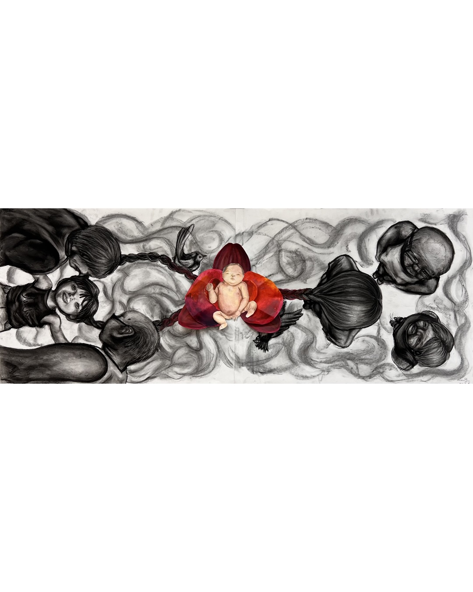

Around Life
1200 x 460 mm
Charcoal, watercolor collage
I looked up my grandparents, who were as tall as cypresses providing a shade for me. They look up me, who is a cypress, tying roots with them. The amount of love my grandparents provide never change with the passage of time.